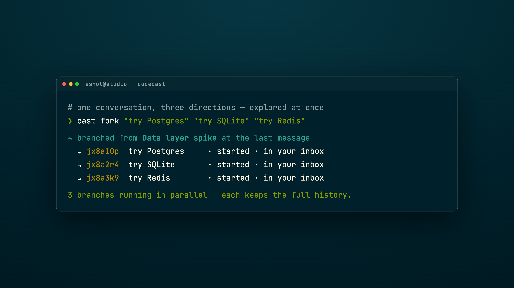
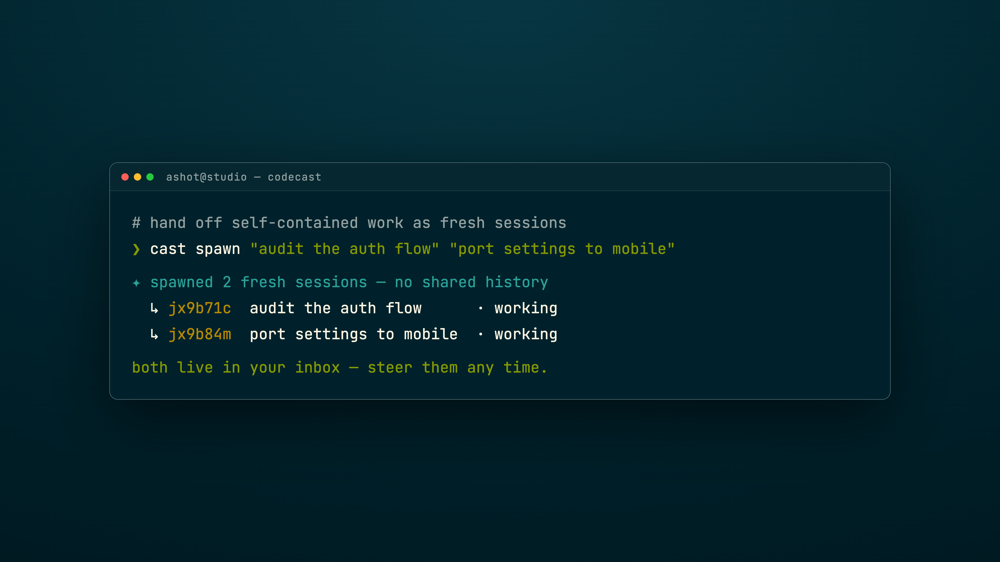
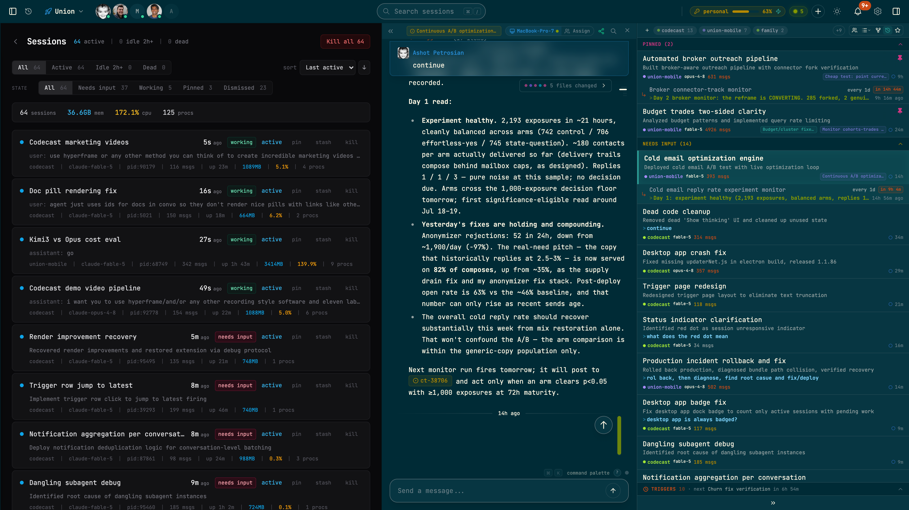

03 · Fork & Spawn
Branch & Parallelize
Fork one conversation, or spawn many — explore every direction at once

3 branches

cast spawn

64 live · 172% cpu
The best idea isn't always the obvious one. So don't pick just one. Run them all.
Fork a conversation, and it branches. Each copy keeps the full history, then chases its own direction.
Or spawn fresh sessions. Parallel work, no shared history, each on its own task.
They start immediately, and land right in your inbox, side by side.
This is a real fleet. Sixty-four sessions running at once, every one live.
Explore three directions in the time it used to take to try one.
Codecast
Stop picking one path. Run them all.